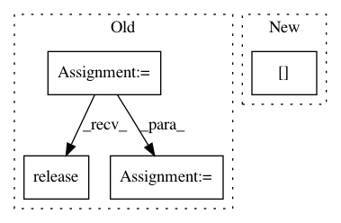

8bd1389b1437ef490da6d9834d90f6f995d17e10,scripts/fsmedia.py,Images,images_found,#Images#,144
Before Change
Number of images or frames
if self.is_video:
cap = cv2.VideoCapture(self.args.input_dir) // pylint: disable=no-member
retval = int(cap.get(cv2.CAP_PROP_FRAME_COUNT)) // pylint: disable=no-member
cap.release()
else:
retval = len(self.input_images)
return retval
After Change
def images_found(self):
Number of images or frames
if self.is_video:
retval = int(im_ffm.count_frames_and_secs(self.args.input_dir)[0])
else:
retval = len(self.input_images)
return retval
In pattern: SUPERPATTERN
Frequency: 3
Non-data size: 4
Instances
Project Name: deepfakes/faceswap
Commit Name: 8bd1389b1437ef490da6d9834d90f6f995d17e10
Time: 2019-06-27
Author: 36920800+torzdf@users.noreply.github.com
File Name: scripts/fsmedia.py
Class Name: Images
Method Name: images_found
Project Name: deepfakes/faceswap
Commit Name: bf9f2645656213ee7c259870c3ab0974b0eef0fc
Time: 2019-07-04
Author: 36920800+torzdf@users.noreply.github.com
File Name: scripts/fsmedia.py
Class Name: Images
Method Name: load_video_frames
Project Name: deepfakes/faceswap
Commit Name: bf9f2645656213ee7c259870c3ab0974b0eef0fc
Time: 2019-07-04
Author: 36920800+torzdf@users.noreply.github.com
File Name: scripts/fsmedia.py
Class Name: Images
Method Name: load_one_video_frame